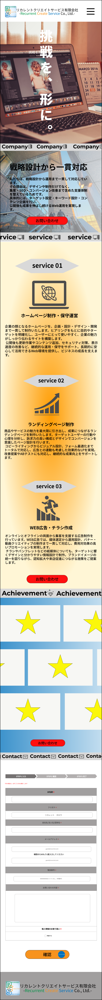

| 概要 | 個人制作の仮想WEBサイト |
|---|---|
| 作品名 | リカレントクリエイトサービス有限会社（ホームページ制作会社） |
| ターゲット | ホームページの制作を考える企業様 |
| 担当範囲 | 企画/デザイン/コーディング |
| 制作期間・制作完了日 | 企画…6時間/デザイン…16時間/コーディング…30時間・2026年4月10日 |
| 使用ツール | Figma/HTML/CSS/Vanilla JavaScript |
| 工夫・サイト設計 | このサイト制作ではクライアントが求める信頼感・誠実さ表現すること、確実にお問い合わせへ繋げる実用性の実装を念頭に、デザイン面・コーディング面で以下の3点を特に意識して取り組みました。見た目のデザインだけでなく、問い合わせという成果につながる導線設計まで意識して制作しました。 1.信頼感・誠実性を重視したデザイン設計 士業（弁護士・税理士など）のクライアントが多いことから、「誠実さ・堅実さ・専門性」が伝わるデザインを意識しました。フォントには「Noto Sans JP」を採用し、可読性の高さに加えて、クセのない安定した印象を与えることで、企業としての信頼感を損なわないよう配慮しました。 レイアウト設計においては、あえてグリッドを崩さず整然とした構造を採用し、余白も均等に保つことで、情報の整理性と視認性を高めています。視覚的な派手さよりも、安心して情報を読み取れることを優先した設計としています。 2.実績と強みが伝わる情報設計と問い合わせにつながる導線設計 何ができる会社かが伝わる構成を意識し、強み・サービス内容・実績を優先的に設計しました。ファーストビュー直下にこれらの情報を配置することで、ユーザーが早い段階で会社の価値を理解できるようにしています。また、各セクションに問い合わせボタンを設置し、ユーザーが興味を持ったタイミングでスムーズに遷移できるようにしています。 3. 保守性とパフォーマンスを意識したコーディング 更新や改修がしやすいよう共通パーツはクラス設計を統一し、保守性・再利用性を高めています。また、企業サイトでは表示速度や安定性も信頼性に直結すると考え、不要なライブラリは使用せず、シンプルな構成で実装しました。JavaScriptは必要最低限に抑え、軽量で安定した表示を実現しています。 |
| ソースコード | Git Hubへ飛びます |
